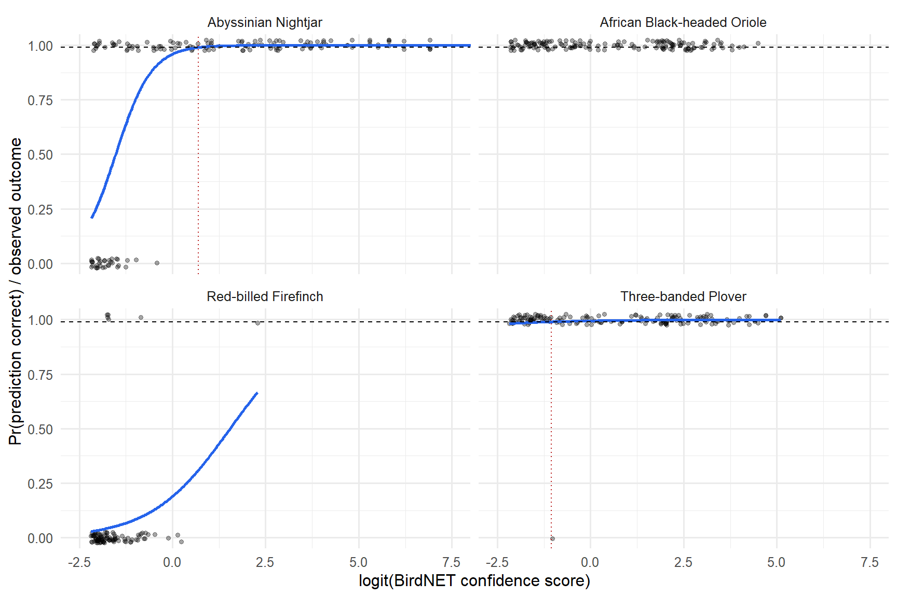

Code
library(tidyverse)
library(janitor)
library(here)
here::i_am("scripts/quarto/birds_analysis.qmd")Bird challenge, Grid2 passive acoustic monitoring, June-July 2023
library(tidyverse)
library(janitor)
library(here)
here::i_am("scripts/quarto/birds_analysis.qmd")BirdNET confidence scores are unitless: a 0.6 for one species is not a 0.6 for another. Following Wood & Kahl (2024), I fit one logistic regression per species on the ornithologist-validated clips, Pr(prediction is correct) ~ logit(confidence), and solve the fitted curve for the score at which that probability reaches 0.99. Every prediction at or above that score is labelled as an observation of the species; everything else keeps the label empty. The validation set is a subset of the predictions, but the two files share no stable key (the validation filename carries a rounded score), so the model is fitted by species and each prediction inherits the model of its species.
A fitted threshold is only released when the model is trustworthy. The rules, in order:
| Rule | Status | Effect |
|---|---|---|
| Validations are all correct or all incorrect | no_outcome_variation |
no model can be fitted; nothing labelled |
| GLM did not converge or has non-finite coefficients | model_failed |
nothing labelled |
| Fitted slope is not positive | non_positive_slope |
nothing labelled |
| 0.99 is reached only above the highest validated score | threshold_extrapolated |
nothing labelled |
| Fewer than 5 incorrect validations | limited_negative_validation |
labelled, but marked provisional_review |
| Otherwise | calibrated |
labelled, accepted |
The “fewer than 5 false positives” rule is a transparent QC rule, not a statistical guarantee: with one or two false positives the curve is placed by a single point.
target_probability <- 0.99
min_false_validations <- 5L
release_statuses <- c("calibrated", "limited_negative_validation")
# BirdNET confidence = sigmoid(logit score * sensitivity); with the default
# sensitivity of 1, qlogis() recovers the logit score the paper recommends modelling.
to_logit <- function(x) qlogis(pmin(pmax(x, 1e-6), 1 - 1e-6))pred <- read_csv(here("input/birds/csv/birdnet_predictions.csv"), show_col_types = FALSE) |>
clean_names() |>
rowid_to_column("prediction_id")
val <- read_csv(here("input/birds/csv/validation_results.csv"), show_col_types = FALSE) |>
clean_names() |>
mutate(score_logit = to_logit(confidence))
stopifnot(
nrow(pred) > 0, nrow(val) > 0,
all(between(pred$confidence, 0, 1)), all(between(val$confidence, 0, 1)),
all(val$outcome %in% c(0, 1)),
all(pred$common_name %in% val$common_name)
)29491 predictions for 4 species, and 551 validated clips (422 correct, 129 incorrect), all from BirdNET v2.4. The validated scores span the full 0.1 to 1.0 range for every species, so they look like a stratified sample across scores rather than a random draw: the model estimates Pr(correct | score), not the overall precision of a species.
fit_species <- function(d) {
failed <- tibble(intercept = NA_real_, slope = NA_real_, status = "model_failed")
if (n_distinct(d$outcome) < 2) return(mutate(failed, status = "no_outcome_variation"))
model <- suppressWarnings(glm(outcome ~ score_logit, family = binomial, data = d))
b <- coef(model)
if (!isTRUE(model$converged) || any(!is.finite(b))) return(failed)
tibble(intercept = b[[1]], slope = b[[2]],
status = if (b[[2]] > 0) "fitted" else "non_positive_slope")
}
thresholds <- val |>
group_by(common_name) |>
group_modify(~ bind_cols(
summarise(.x,
birdnet_version = paste(unique(v_bird_net), collapse = ";"),
n_validations = n(), n_correct = sum(outcome == 1), n_incorrect = sum(outcome == 0),
precision_lower95 = binom.test(n_correct, n_validations)$conf.int[1],
max_validated_score = max(confidence)),
fit_species(.x)
)) |>
ungroup() |>
mutate(
# Solve logit(0.99) = intercept + slope * logit(score) for the score.
threshold_99 = if_else(status == "fitted",
plogis((qlogis(target_probability) - intercept) / slope), NA_real_),
calibration_status = case_when(
status != "fitted" ~ status,
threshold_99 > max_validated_score ~ "threshold_extrapolated",
n_incorrect < min_false_validations ~ "limited_negative_validation",
TRUE ~ "calibrated"
)
) |>
select(-status)
thresholds |>
select(common_name, n_validations, n_correct, n_incorrect, precision_lower95,
intercept, slope, threshold_99, max_validated_score, calibration_status) |>
mutate(across(where(is.double), ~ round(.x, 3))) |>
knitr::kable()| common_name | n_validations | n_correct | n_incorrect | precision_lower95 | intercept | slope | threshold_99 | max_validated_score | calibration_status |
|---|---|---|---|---|---|---|---|---|---|
| Abyssinian Nightjar | 150 | 117 | 33 | 0.705 | 3.159 | 2.072 | 0.667 | 1.000 | calibrated |
| African Black-headed Oriole | 150 | 150 | 0 | 0.976 | NA | NA | NA | 0.989 | no_outcome_variation |
| Red-billed Firefinch | 101 | 6 | 95 | 0.022 | -1.458 | 0.942 | 0.998 | 0.907 | threshold_extrapolated |
| Three-banded Plover | 150 | 149 | 1 | 0.963 | 5.170 | 0.547 | 0.259 | 0.994 | limited_negative_validation |
curve_data <- val |>
summarise(lo = min(confidence), hi = max(confidence), .by = common_name) |>
inner_join(filter(thresholds, !is.na(slope)), by = "common_name") |>
reframe(confidence = seq(lo, hi, length.out = 200),
p_correct = plogis(intercept + slope * to_logit(confidence)),
.by = common_name) |>
mutate(score_logit = to_logit(confidence))
plot_calibration <- ggplot(val, aes(score_logit, outcome)) +
geom_jitter(width = 0, height = 0.025, alpha = 0.35, size = 1.3) +
geom_line(data = curve_data, aes(y = p_correct), linewidth = 0.9, color = "#2563eb") +
geom_hline(yintercept = target_probability, linetype = "dashed") +
geom_vline(data = filter(thresholds, calibration_status %in% release_statuses),
aes(xintercept = to_logit(threshold_99)), linetype = "dotted", color = "#b91c1c") +
facet_wrap(~common_name, ncol = 2) +
coord_cartesian(xlim = c(-2.5, 7.5), ylim = c(0, 1)) + # 2 Nightjar clips scored exactly 1.0 (logit 13.8) are off-axis
labs(x = "logit(BirdNET confidence score)", y = "Pr(prediction correct) / observed outcome") +
theme_minimal(base_size = 12)
dir.create(here("reports/figures"), recursive = TRUE, showWarnings = FALSE)
ggsave(here("reports/figures/birdnet_calibration.png"), plot_calibration, width = 9, height = 6, dpi = 150)
plot_calibration
The new observation field holds the species name when the prediction is at or above its species threshold and the threshold was released, and is empty otherwise. production_observation is the stricter version that excludes provisional species, and decision_status says why each prediction got the label it got.
labeled <- pred |>
left_join(thresholds, by = "common_name") |>
mutate(
p_correct = plogis(intercept + slope * to_logit(confidence)),
is_observation = calibration_status %in% release_statuses & confidence >= threshold_99,
observation = if_else(is_observation, common_name, NA_character_),
production_observation = if_else(is_observation & calibration_status == "calibrated",
common_name, NA_character_),
decision_status = case_when(
is_observation & calibration_status == "calibrated" ~ "accepted",
is_observation ~ "provisional_review",
calibration_status == "no_outcome_variation" ~ "insufficient_validation",
calibration_status == "threshold_extrapolated" ~ "extrapolation_not_allowed",
calibration_status == "model_failed" ~ "model_failed",
calibration_status == "non_positive_slope" ~ "model_failed_direction",
TRUE ~ "below_99_percent_or_not_calibrated"
)
)
summary_table <- labeled |>
group_by(common_name) |>
summarise(n_predictions = n(),
n_observations = sum(!is.na(observation)),
n_production = sum(!is.na(production_observation))) |>
left_join(select(thresholds, common_name, threshold_99, calibration_status), by = "common_name")
knitr::kable(mutate(summary_table, threshold_99 = round(threshold_99, 3)))| common_name | n_predictions | n_observations | n_production | threshold_99 | calibration_status |
|---|---|---|---|---|---|
| Abyssinian Nightjar | 10187 | 3147 | 3147 | 0.667 | calibrated |
| African Black-headed Oriole | 18054 | 0 | 0 | NA | no_outcome_variation |
| Red-billed Firefinch | 235 | 0 | 0 | 0.998 | threshold_extrapolated |
| Three-banded Plover | 1015 | 538 | 0 | 0.259 | limited_negative_validation |
dir.create(here("output/birds"), recursive = TRUE, showWarnings = FALSE)
write_csv(select(labeled, -is_observation), here("output/birds/birdnet_predictions_labeled.csv"), na = "")
write_csv(thresholds, here("output/birds/birdnet_species_thresholds.csv"), na = "")
write_csv(summary_table, here("output/birds/birdnet_species_summary.csv"), na = "")Abyssinian Nightjar: calibrated, threshold 0.667. The only species with a clean curve: 33 false positives spread across the score range. 74 validated clips sit above the threshold and 0 of them are wrong, so the 99% claim holds within the validated data. 3147 of 10187 predictions become observations.
African Black-headed Oriole: no threshold, 18054 predictions (61% of the file) left unlabelled. All 150 validations were correct, so there is no curve to fit. The tempting shortcut is to call every prediction an observation, but 150 of 150 only supports a precision of at least 0.976 at 95% confidence, below the 0.99 target; an error-free sample of about 299 clips would be needed to support it. I therefore keep the species unlabelled and recommend validating a further 149 clips, concentrated in the lower score range where the first false positives would appear. If the project needs these clips now, the defensible provisional rule is a threshold at the lowest validated score (0.104), clearly marked as provisional.
Three-banded Plover: provisional, threshold 0.259. A single false positive (score 0.264) among 150 validations. The GLM slope is not distinguishable from zero and the threshold is simply “just above that one clip”, so it should not be read as a real 99% cutoff. The empirical precision is 149/150 with a 95% lower bound of 0.963. The 538 predictions above the threshold are labelled for review but excluded from production_observation; a few more false positives in the validation set would settle it.
Red-billed Firefinch: excluded. Only 6 of 101 validations were correct and the curve reaches 0.99 at 0.998, above the highest validated score (0.907). Releasing that threshold would mean trusting the model where it has never seen data, so none of the 235 predictions are labelled. BirdNET does not separate this species well in these recordings; a different detector or manual review is the realistic route.
Net result: 3147 accepted observations and 538 provisional ones out of 29491 predictions. That is deliberately conservative: a 99% rule applied honestly to four species with about 150 validations each does not leave much, and the value of the exercise is knowing which species need more validation effort.
common_name, confidence, clip location) and a validations table (common_name, confidence, outcome in {0, 1}, vBirdNET). Validations are keyed by species only; no join to predictions is needed.glm(outcome ~ qlogis(confidence), family = binomial), solve for p = 0.99, apply the rules in section 1, and upsert one row into a species_thresholds table: species, birdnet_version, n_validations, n_correct, n_incorrect, intercept, slope, threshold_99, max_validated_score, calibration_status, fitted_at. This file’s version is birdnet_species_thresholds.csv.species_thresholds on species and BirdNET version; observation = species where calibration_status in ('calibrated', 'limited_negative_validation') and confidence >= threshold_99, else null; decision_status as in section 4. A species with no row in the table gets not_validated, not an error.target_probability = 0.99, min_false_validations = 5) live in one place and should be configuration, not code.calibrated with the number of validations needed. That is what tells the ornithologist where to spend validation time.